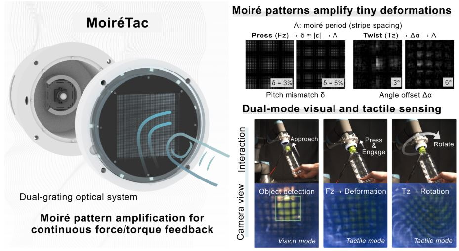
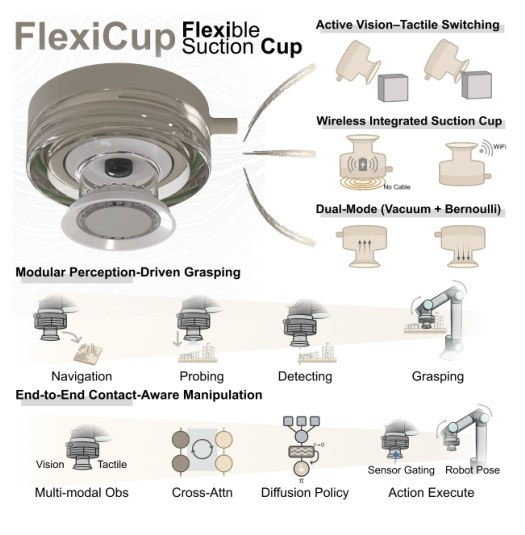
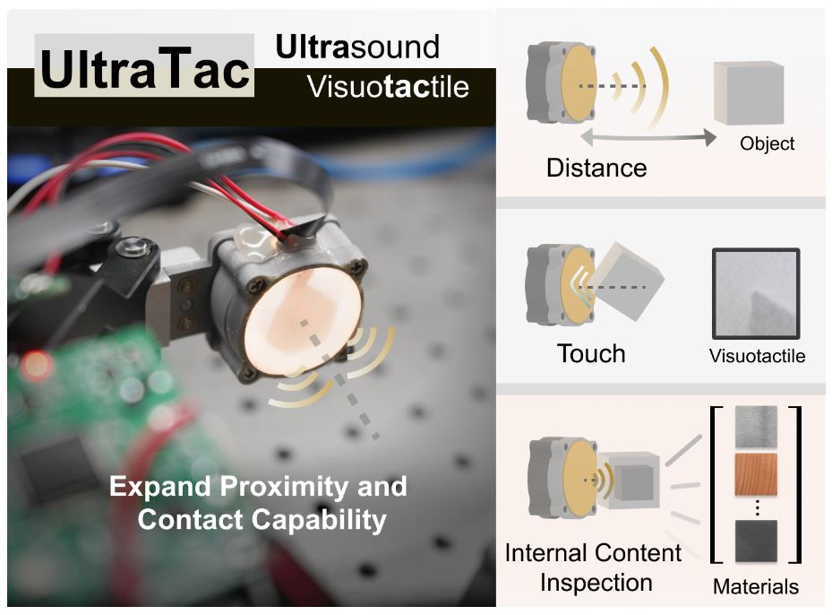
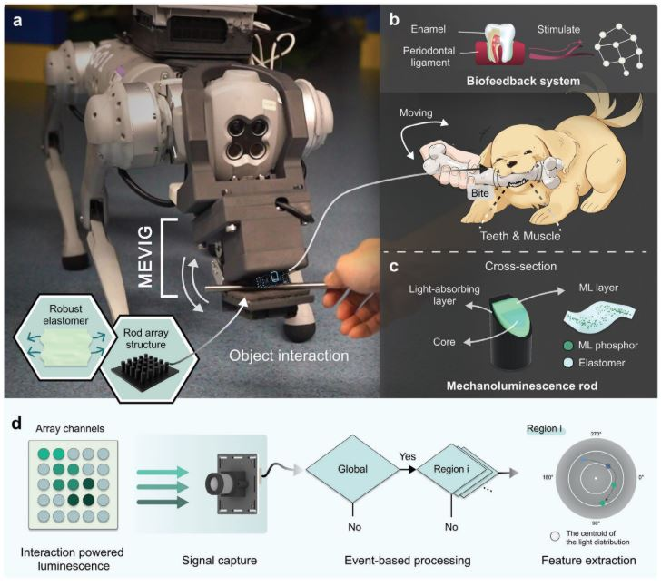
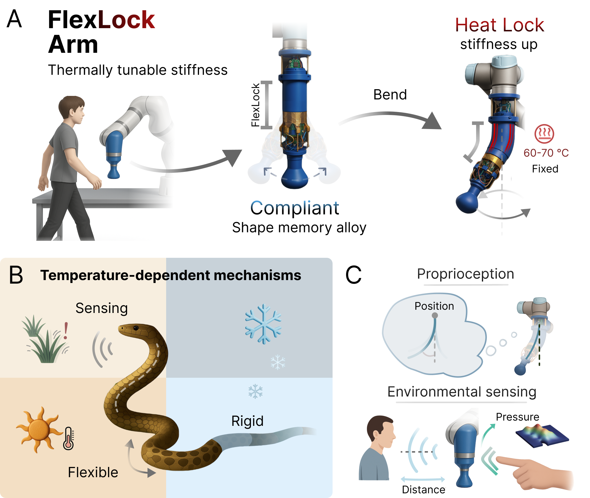

Research Work Details
Research Work Introduction
DexHand Sensing System: A System Concept Note (Sensor Stack × Multi-rate Loops × Learning)
This note summarizes a structured sensing-system design for dexterous hands: what to sense, how to synchronize and calibrate multimodal streams, and how to build learning-ready data schemas. It emphasizes a three-loop view (fast reflex / mid tactile coordination / slow semantics) to make grasp stability and recovery robust in contact-rich manipulation.
- Sensor stack from minimum viable proprioception to visuotactile / dynamic tactile arrays
- Multi-rate closed loop decomposition: 1 kHz safety/reflex, 60–200 Hz tactile control, 5–15 Hz planning
- Timestamp-at-source + ring buffer alignment for replayable data
- Learning-ready schema: tactile + proprioception + action + QC labels (replay_ok, recovery_event)
Also see: Thinking Board (a lightweight local message board for future notes).
MoiréTac: A Dual-Mode Visuotactile Sensor for Multidimensional Perception Using Moiré Pattern Amplification
This research develops a dual-mode visuotactile sensor based on moiré pattern amplification, enabling multidimensional perception. The sensor supports multi-DoF force/pose estimation and pre-grasp cues, providing continuous tactile field perception through vision-through-contact fusion technology.
- Innovatively applied moiré pattern amplification technology to tactile perception
- Achieved vision-through-contact dual-mode fusion perception
- Supports multi-DoF force/pose estimation
- Provides pre-grasp cues to enhance robotic manipulation capabilities

FlexiCup: Wireless Multimodal Suction Cup with Dual-Zone Vision-Tactile Sensing
This work presents a wireless multimodal suction cup with dual-zone vision-tactile sensing. The system combines active vision-tactile switching, wireless integrated electronics, and modular vacuum/Bernoulli actuation for contact-aware robotic manipulation.
- Dual-zone vision-tactile architecture for central and peripheral contact awareness
- Wireless integrated suction cup design for deployable manipulation scenarios
- Compatible sensing pipeline across vacuum and Bernoulli suction modes
- Validated with modular perception-driven grasping and end-to-end contact-aware manipulation

UltraTac: Integrated Ultrasound-Augmented Visuotactile Sensor for Enhanced Robotic Perception
This research proposes an integrated ultrasound-augmented visuotactile sensor for enhanced robotic perception. The sensor combines vision, tactile, and ultrasound technologies to provide more accurate perception information in complex environments.
- Multimodal fusion (Visuotactile + ultrasound)
- Enhanced perception accuracy and robustness
- Applicable to robotic manipulation in complex environments

A Bio-Inspired Event-Driven Mechanoluminescent Visuotactile Sensor for Intelligent Interactions
This research develops a bio-inspired event-driven mechanoluminescent visuotactile sensor for intelligent interactions. The sensor features low power consumption and strong ambient-light immunity, validated for human-robot interaction applications on a quadruped platform.
- Event-driven mechanism for reduced power consumption
- Mechanoluminescent materials for self-illuminated perception
- Strong ambient-light immunity
- Validated on quadruped robot platform

FlexLock: Bionic Snake-Inspired Variable-Stiffness Flexible Robotic Arm
This research proposes a snake-inspired variable-stiffness flexible robotic arm, combining shape memory alloy (SMA) and particle jamming technologies for stiffness modulation. The design is suitable for safe human-robot interaction and high-load manipulation scenarios.
- Bio-inspired design inspired by snakes
- Stiffness modulation using SMA and particle jamming technology
- Safe human-robot interaction capabilities
- High-load manipulation capabilities

论文工作介绍
灵巧手传感系统构想：传感栈 × 多频闭环 × 学习数据结构
该笔记总结了灵巧手传感系统的结构化设计：需要感知哪些信号、如何做多模态同步与标定，以及如何把数据组织成面向 VLA/RL 的训练单元。 核心是“三层闭环”：快反射/安全（1kHz）、触觉协调（60–200Hz）、慢语义规划（5–15Hz），从而提升接触密集任务中的稳定性与恢复能力。
- 从最小可用本体感知到视触觉/动态触觉阵列的传感栈
- 多频闭环拆分：快安全、中触觉、慢语义
- 设备端打戳 + 环形缓冲对齐，让数据可复现
- 面向学习的数据 schema：触觉+本体+动作+质控标签（replay_ok / recovery_event）
也可以看：Thinking Board（一個輕量留言版，用來記錄技術/產品/經濟等未來想法）。
MoiréTac: 基于莫尔图案放大的双模式视触觉传感器
本研究开发了一种基于莫尔图案放大的双模式视触觉传感器，能够实现多维感知。该传感器支持多自由度力/姿态估计和预抓取线索，通过视觉-接触融合技术提供连续触觉场感知。
- 创新性地将莫尔图案放大技术应用于触觉感知
- 实现了视觉-接触双模式融合感知
- 支持多自由度力/姿态估计
- 提供预抓取线索，提升机器人操作能力
FlexiCup: 无线多模态双区域视触觉吸盘
该工作提出了一种无线多模态吸盘，通过双区域视触觉感知实现接触感知操作。系统结合主动视触觉切换、无线集成电子系统，以及可模块化切换的真空/Bernoulli 吸附执行方式。
- 中心区与外围区协同的双区域视触觉架构
- 面向部署场景的无线集成吸盘设计
- 同一感知管线兼容真空吸附与 Bernoulli 吸附模式
- 通过模块化感知抓取与端到端接触感知操作进行验证
UltraTac: 集成超声增强的视触觉传感器
本研究提出了一种集成超声增强的视触觉传感器，用于增强机器人感知能力。该传感器结合了视觉、触觉和超声技术，能够在复杂环境中提供更准确的感知信息。
- 多模态融合（视触觉+超声）
- 增强的感知精度和鲁棒性
- 适用于复杂环境下的机器人操作
受生物启发的事件驱动机械发光视触觉传感器
本研究开发了一种受生物启发的事件驱动机械发光视触觉传感器，用于智能交互。该传感器具有低功耗和强环境光抗干扰能力，已在四足机器人平台上验证了人机交互应用。
- 事件驱动机制，降低功耗
- 机械发光材料，实现自发光感知
- 强环境光抗干扰能力
- 在四足机器人平台上验证
FlexLock: 受蛇类启发的可变刚度柔性机械臂
本研究提出了一种受蛇类启发的可变刚度柔性机械臂，结合了形状记忆合金（SMA）和颗粒阻塞技术，实现刚度调制。该设计适用于安全的人机交互和高负载操作场景。
- 受蛇类生物启发的仿生设计
- SMA和颗粒阻塞技术实现刚度调制
- 安全的人机交互能力
- 高负载操作能力